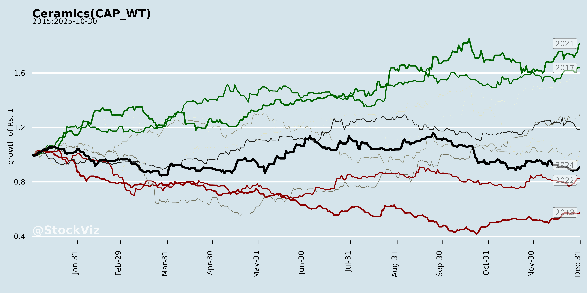
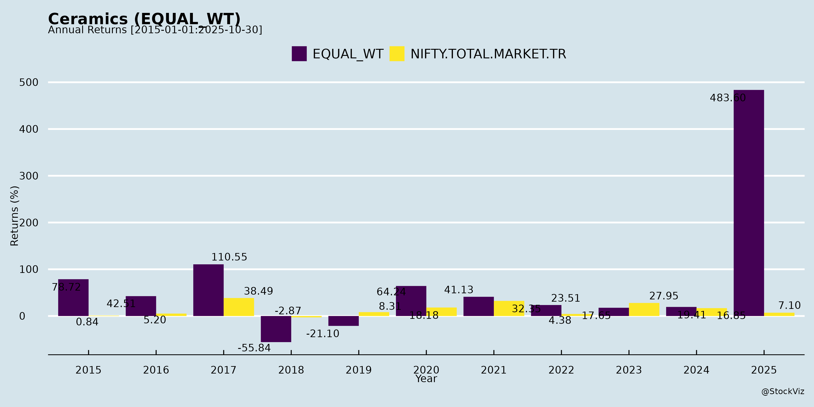
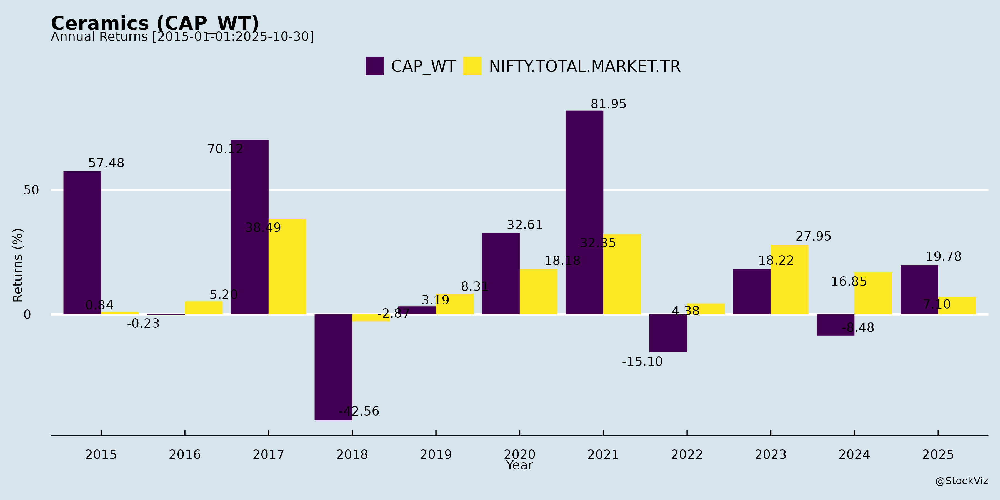
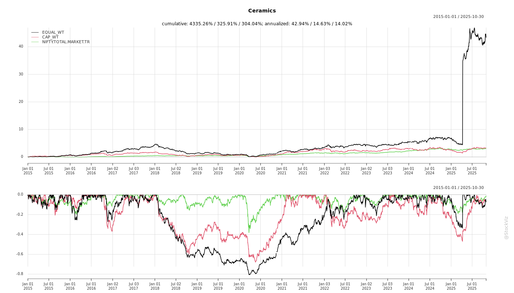
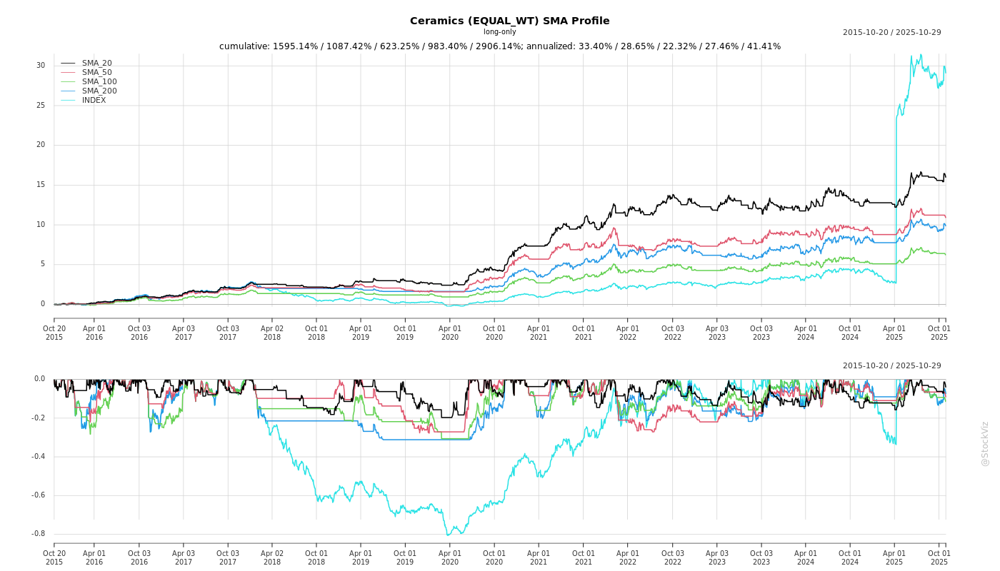
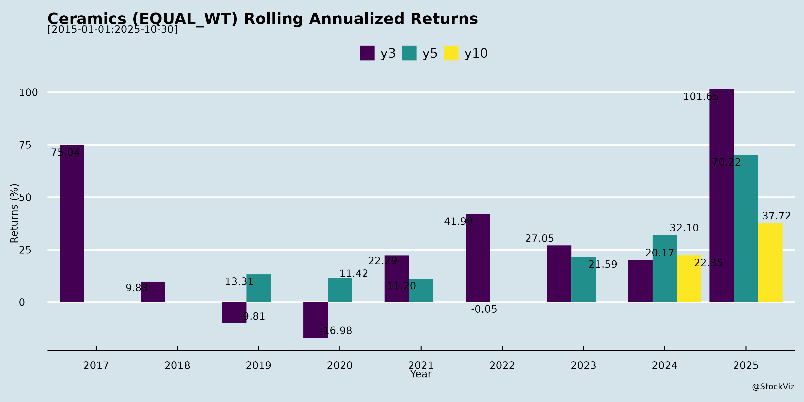
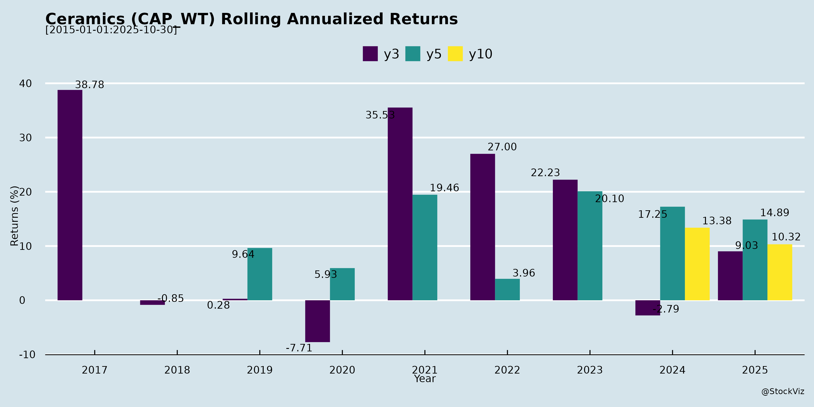

asof: 2025-12-03
Indian Ceramics Industry Analysis (Based on Q2 FY26 Earnings Transcripts of Kajaria and Somany Ceramics)
The analysis draws from Kajaria Ceramics (revenue +1% YoY to ₹1,186 Cr, EBITDA margin 17.94%) and Somany Ceramics (revenue +3.6% YoY despite regional disruptions, EBITDA margin 7.9%), reflecting branded players’ performance amid a soft industry. Both highlight operational resilience but muted volumes. Other documents (investor meets) add no substantive insights.
Headwinds
Tailwinds
Growth Prospects
Key Risks
Summary: Branded ceramics players demonstrate resilience through cost cuts and restructuring, achieving margin highs amid flat volumes (industry growth ~low single-digits FY26). Tailwinds from exports, mix shifts, and distribution fixes position for H2 recovery (mid-high single-digit growth, 10-18%+ EBITDA). However, soft demand and Morbi competition cap prospects; key monitorables are Oct-Dec volumes and utilization. Overall outlook cautiously optimistic for FY27 double-digit margins/growth if macro improves. No major capex signals; focus on efficiency/debt reduction.
asof: 2025-12-01
Analysis of Indian Ceramics Industry (Based on Q1 FY26 Financial Results of Key Players)
The provided documents contain unaudited Q1 FY26 (quarter ended June 30, 2025) and some 9M/annual results for major ceramics players like Kajaria Ceramics (market leader), NITCO, Somany Ceramics, Asian Granito India Ltd (AGIL), Orient Bell, Exxaro Tiles, Murudeshwar Ceramics, and Lexus Granito. These reflect a mixed industry outlook: resilient leaders (e.g., Kajaria, Somany) showing growth amid cost pressures, while stressed players (e.g., NITCO) face severe challenges. Overall revenue growth ~5-10% YoY for top firms, but EBITDA margins squeezed by input costs. Industry trends: tiles dominate (80-90% revenue), diversification into bathware/granito.
Tailwinds (Positive Factors)
Headwinds (Negative Factors)
Growth Prospects
Key Risks
Summary: Indian ceramics poised for moderate growth (8-10%) led by Kajaria/Somany (tailwinds: demand, efficiency), but midcaps stressed (headwinds: debt, costs). Prospects hinge on realty/infra; risks from leverage/regulatory overhang. Investors favor leaders; monitor NITCO restructuring. Industry FY26 EBITDA ~₹5,000-6,000 Cr.
asof: 2025-11-30
Based on the provided documents from key players like Kajaria Ceramics (detailed Q2/H1 FY26 financials), NITCO (Q2 FY26 presentation highlighting turnaround), and others (e.g., Somany, Exxaro, Orient Bell, etc.), here’s a synthesized analysis of the Indian Ceramics sector (tiles, marble, mosaics, sanitaryware). The sector benefits from India’s position as the world’s 2nd largest tile producer, with domestic demand driven by real estate, infrastructure, and exports. Data reflects robust recovery post-COVID, but with pockets of challenges.
| Metric | Kajaria H1 FY26 (Cons.) | NITCO H1 FY26 (Core Biz) | Sector Outlook |
|---|---|---|---|
| Revenue Growth | +1% YoY | +91% YoY | 8-9% CAGR to 2030 |
| PAT Growth | +37% YoY | Turnaround (₹51 Cr profit) | Premium/exports key |
| EBITDA Margin | ~15-18% | 16-18% | Improving efficiencies |
The Indian Ceramics sector is in a strong recovery phase with tailwinds from real estate/infra boom, premiumization, and exports outweighing headwinds like costs and past debt issues. Leaders like Kajaria (market leader, consistent profits/dividends) and NITCO (turnaround success, 90%+ growth) signal high growth prospects (8-30% CAGR) via expansion and tech. However, risks from competition, forex, and execution persist – focus on organized players with clean balance sheets (e.g., low debt Kajaria) for outperformance. Overall outlook: Bullish for FY26-30, with real estate monetization as a differentiator. Investors should monitor Q3 results for sustained momentum.
asof: 2025-12-03
Indian Ceramics Industry Analysis (Based on Kajaria & Somany Q2 FY26 Earnings Transcripts)
The Indian ceramics industry (primarily vitrified, ceramic tiles, bathware, and adhesives) faces a soft demand environment but shows structural improvements in cost efficiency, margins, and strategic resets among branded players like Kajaria and Somany. Kajaria reported flat volumes but superior margins (EBITDA 17.94%, PAT +58%), while Somany achieved 3.6% revenue growth despite regional disruptions, with EBITDA at 7.9% (impacted by outages). Industry exports are growing, but domestic volumes remain muted. Below is a structured summary of headwinds, tailwinds, growth prospects, and key risks.
Headwinds (Current Challenges)
Tailwinds (Positive Structural Shifts)
Growth Prospects
Key Risks
| Risk Category | Description | Mitigation |
|---|---|---|
| Demand Risk | Prolonged slowdown if infra/real estate delays; seasonal (Diwali muted). | Infra push, export diversion; dealer expansion. |
| Competition | Morbi evasion/price wars; unorganized retail capture. | Brand focus, pricing hikes, consultant-driven penetration. |
| Cost/OpEx Volatility | Gas price spikes; raw material/inventory (Nepal). | Negotiations, unification savings; insurance (Somany outage). |
| Execution | Sales reset teething (Kajaria lost some volumes); JV losses persist. | New hires, no increments; product mix shifts. |
| Macro | Regional disruptions (rains, Nepal turmoil); no capex limits surge capacity. | Outsourcing, 25% outsourcing ratio (Kajaria). |
Overall Summary: The industry is transitioning from volume pain to margin resilience, with branded players like Kajaria/Somany de-risking via lean ops (EBITDA 8-18%) amid flat demand. Tailwinds from exports (+10%), cost cuts, and reorganization outweigh headwinds, positioning for high single-digit growth in H2 FY26/FY27 once demand recovers (real estate/infra). Risks center on execution and macro recovery, but strong BS/FCF provides buffer. Branded share gains likely as Morbi pivots to exports. Bull Case: 15-20% EBITDA sustainable with 85%+ utilization. Bear Case: Flat volumes delay margin peak to FY27.
asof: 2025-12-01
Based on the provided documents from key players like Kajaria Ceramics, NITCO, Somany Ceramics, Asian Granito India, Orient Bell, Exxaro Tiles, Murudeshwar Ceramics, Regency Ceramics, and Lexus Granito, the Indian ceramics sector exhibits resilience amid restructuring and leadership continuity. The sector is dominated by promoter-led firms focusing on tile manufacturing, with evidence of revenue recovery post-COVID, strategic demergers, and capital infusions. However, legacy issues like operational disruptions and losses persist. Below is a structured summary:
Projected Outlook: Sector revenue could grow 8-10% YoY (led by Kajaria/Asian Granito), driven by capacity ramps and exports. Profitability hinges on cost control (power/fuel 10-15% of expenses).
| Risk Category | Description | Evidence from Docs | Mitigation |
|---|---|---|---|
| Operational/Legacy | Plant disruptions, lockouts, insurance delays. | Regency’s 2012 violence; unprovided gratuity/leave. | Refurbishments, settlements (Regency MOU). |
| Financial | Losses, debt (Asian Granito borrowings ₹28 Cr), net worth erosion. | Regency negative equity; high finance costs (Murudeshwar ₹4.5 Cr H1). | Restructuring schemes, rights issues. |
| Regulatory/Tax | Tax raids, appeals (Asian Granito Note 7); NCLT schemes pending. | Income tax searches; deferred tax volatility. | Appeals, compliance (e.g., KYC updates). |
| Promoter Dependency | Heavy reliance on family/promoters. | Kajaria/Exxaro re-appointments (father-son dynamics). | NRC oversight, independent directors. |
| Market | Raw material volatility, competition. | Inventory changes (Somany -ve); RPT scrutiny. | Diversification (subsidiaries, exports). |
| Liquidity | High capex needs, working capital. | Asian Granito capex ₹42 Cr rights utilization. | Warrant conversions, dividends. |
Overall Sector Rating: Moderate Growth with Caution. Tailwinds from restructuring/leadership dominate, but Regency-like cases highlight execution risks. Monitor Q3 FY26 for plant restarts and scheme outcomes. Investors favor Kajaria/Asian Granito for stability.
Analysis based solely on provided docs; no external data used.
asof: 2025-11-30
Indian Ceramics Sector Analysis (Based on Kajaria Ceramics, NITCO, and Asian Granito India Ltd. Q1/Q2/H1 FY26 Updates)
The Indian ceramics sector shows resilience amid soft market conditions, with companies like Kajaria Ceramics (market leader), NITCO, and Asian Granito India Ltd (AGL) reporting improved profitability despite muted revenue growth. Key drivers include operational efficiencies, margin expansion, and non-core asset monetization, offset by weak demand and export pressures. Below is a structured summary of headwinds, tailwinds, growth prospects, and key risks.
Headwinds (Challenges Pressuring the Sector)
Tailwinds (Supportive Factors)
Growth Prospects
Key Risks
Overall Outlook: Sector in turnaround mode with robust margins (15-18% EBITDA for leaders) offsetting flat revenues. Organic growth hinges on demand revival (H2 FY26 potential), but diversified strategies (premium products, non-core sales) provide buffers. Investors should monitor Q3 volumes and export trends for sustained momentum. Kajaria remains the bellwether with scale advantages.
Copyright © 2023 SAS Data Analytics Pvt. Ltd. All rights reserved.